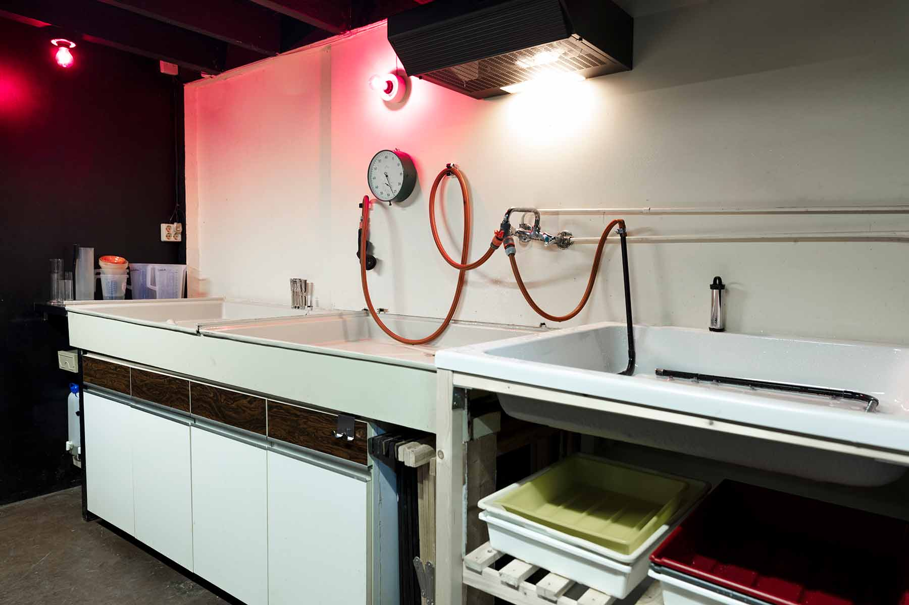

Professionele doka voor analoge fotografie
Bij Doka Rotterdam huur je een volledig uitgeruste donkere kamer in Rotterdam, perfect voor fotografen die hun eigen zwart-wit film willen ontwikkelen en afdrukken.
Alles staat voor je klaar
Bij DOKA Rotterdam huur je een professioneel uitgeruste, privé te gebruiken donkere kamer in Rotterdam. Een plek waar je in alle rust en op je eigen tempo met analoge fotografie aan de slag kunt. Of je nu voor het eerst zelf foto's afdrukt of al ervaring hebt in de doka: je krijgt de ruimte om te experimenteren, te leren en je eigen beelden tot leven te brengen.
De doka is ingericht voor het ontwikkelen van zwart-witfilm en het afdrukken van zwart-witfoto's. Met een professionele Durst-vergroter, ontwikkelschalen en de benodigde chemicaliën heb je alles bij de hand om direct aan de slag te gaan.
Je kunt de doka alleen huren of samen met maximaal één extra deelnemer. Zo blijft het kleinschalig en is er ruimte voor persoonlijke begeleiding wanneer je die nodig hebt.

Introductie & begeleiding
Voorafgaand aan je sessie krijg je een korte introductie, zodat je vertrouwd raakt met de apparatuur en de werkwijze in de donkere kamer. We leggen je uit hoe je de vergroter en timer gebruikt en helpen je op weg met het maken van je eerste afdruk.
De chemicaliën zetten we vooraf voor je klaar, zodat je geen tijd verliest en direct kunt beginnen. Na de introductie werk je zelfstandig aan je foto's. Heb je tussendoor vragen of kom je ergens niet uit? Dan is er ondersteuning beschikbaar.
Wil je meer leren over specifieke druktechnieken, zoals doordrukken, tegenhouden, contrast beheersen of werken met barietpapier? Dan kun je extra begeleiding bijboeken.
Specificaties van de doka
De doka is uitgerust met professionele apparatuur voor het ontwikkelen van zwart-witfilm en het maken van analoge afdrukken.
- Vergroter: Durst M605, geschikt voor 35mm- en 4×4-negatieven
- Contrastregeling: mogelijkheden om het contrast van zwart-witafdrukken aan te passen
- Timer: voor nauwkeurige belichting van je afdrukken
- Ontwikkelschalen: verschillende formaten inbegrepen
- Filmontwikkeling: ontwikkeltanks voor 35mm- en 120-film, exclusief chemicaliën
- Film retriever: voor het openen van 35mm-filmcartridges
- Droogkast: voor het drogen van ontwikkelde film
- Maximaal afdrukformaat: tot 50 × 50 cm op aanvraag, met een aangepaste setup
Inclusief
Bij je reservering is het volgende inbegrepen:
- Privégebruik van de doka gedurende je gereserveerde sessie
- Korte introductie en uitleg over de apparatuur
- Basisbegeleiding bij het gebruik van de vergroter en timer
- Chemicaliën voor ongeveer tien A4-afdrukken, exclusief teststroken. Dit is een richtlijn en kan per sessie verschillen.
- Gebruik van de aanwezige apparatuur en ontwikkelschalen
Exclusief
De volgende zaken zijn niet inbegrepen in de standaardhuur:
- Fotopapier: verkrijgbaar tegen kostprijs, op voorafgaande reservering, of zelf mee te nemen
- Extra chemicaliën: €10 per tien extra afdrukken
- Extra deelnemer: €30 per sessie
- Uitgebreide begeleiding: €30 extra voor persoonlijke begeleiding bij technieken zoals doordrukken, tegenhouden, contrastbeheersing en werken met barietpapier
De doka is uitsluitend geschikt voor zwart-witfotografie. Kleurontwikkeling is niet mogelijk.
Wat neem je zelf mee?
Om het meeste uit je doka-sessie te halen, raden we je aan het volgende mee te nemen:
- Je eigen negatieven: neem de zwart-witnegatieven mee die je wilt afdrukken. Controleer vooraf of het formaat geschikt is voor onze vergroter.
- Fotopapier: fotopapier is niet inbegrepen bij de huur. Je kunt het zelf meenemen of vooraf bij ons reserveren tegen kostprijs.
- Je ideeën en experimenten: neem vooral de tijd om te ontdekken wat er mogelijk is. Juist door te proberen en te spelen met licht en contrast ontstaan vaak de mooiste resultaten.
Nog geen ervaring met afdrukken in de donkere kamer? Geen probleem. Met de introductie vooraf en ondersteuning wanneer je die nodig hebt, kun je ook als beginner aan de slag.